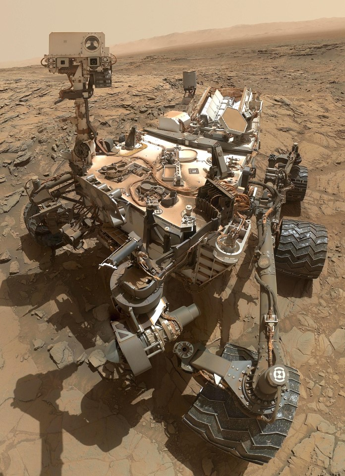
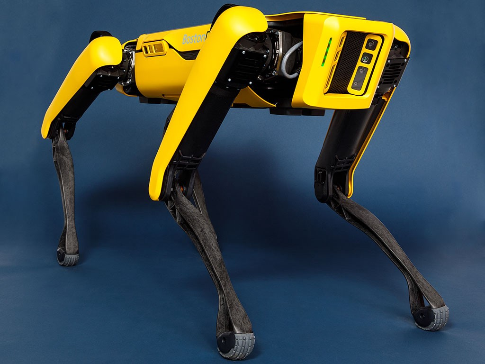

Robotyka - Przyszłość ludzkości
Strona Główna
Kursy
Roboty ostatnich lat
Roboty ostatnich lat

The Curiosity Robot - jeden z robotów wysłanych na Mars w 2012 roku

Robot pies firmy Boston Dynamics - mimo że nie do końca przypomina psa oprócz stania na czterech
łapach to jest to jeden z popularniejszy robotów na mediach społecznościowych